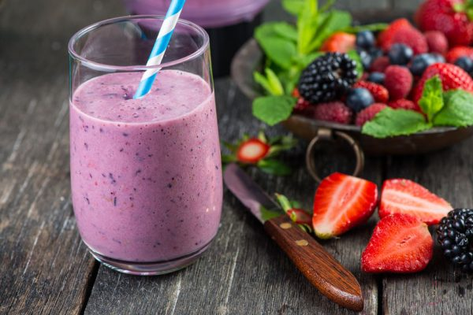
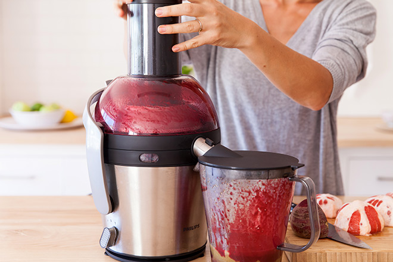

11 Natural Methods for Detoxing Your Body

Cleansing health lifestyles, herbs, and fastingprograms may seem like a modern health trend but societies have used natural cleansing methods to detoxify the body for hundreds of years. Many religions actually encourage people to fast as a means of cleansing both the body and the mind for spiritual practices. Toxic and polluted food systems, air and water, and environment make cleansing the colon, liver and other organs more important now than ever. The burden of over-pollution may be responsible for deleterious effects on the immune system, a scenario which makes us highly susceptible to chronic degenerative diseases such as some forms of cancer, heart disease, diabetes, Alzheimer's disease and more.

This article will break down several of the current methods and foods that assist the body, naturally, achieve a detoxified state. Make sure to always avoid refined foods, sugars, MSG, yeast, dairy products, caffeine and chocolate, soy, peanuts, alcohol and non-whole-grain starches while doing any type of cleanse or fast.
Natural Detox Methods
Liver cleanse-
Regimes for cleansing the liver should incorporate more bitter greens and chlorophyll juices such as wheat-grass and dandelion greens. Other liver-happy foods include carrots, celery, limes, lemons, and beets. Spices that offer cleansing effects on the liver include turmeric, rosemary, cayenne, cumin and curry. Avoid coffee, milk and sodas, instead, opt for purified water and/or apple juice. To help support your cleansing efforts, add Livatrex to a gallon of apple juice or water and follow these liver cleansing instructions.
Oxygen colon cleanse-
One of the best natural detox methods is a six or seven day cleanse using distilled water, organic/raw apple cider vinegar, aloe vera juice, Oxy-Powder and a probiotic supplement. This cleanse is a quick and effective way to purify your digestive tract. Here are my recommended instructions for doing a colon cleanse.
Candida cleanse-
This is designed to remove candida within the body by removing all foods containing yeast or fermented foods. This health lifestyle requires avoiding all forms of sugar (including fruit and fruit juice), all refined flours and wheat products, any foods containing yeast, as well as all natural sweeteners such as agave nectar or raw honey. During a candida cleanse you should also avoid alcoholic drinks, dried fruits, mushrooms, cheese, pickled vegetables and soy sauce. Organic oregano oil and Latero-Flora are also extremely effective against candida.
Harmful organism cleanse-
There are many herbs you can take to help kill off unwanted intestinal infestations that may be affecting your health. Wormwood, black walnut hull, clove and American wormseed are four herbs that create a hostile environment inside your intestinal tract for invading organisms, and help kill organisms that may already be there. Taking a probiotic supplement will also help flush out any unwelcome visitors. Here is my recommended cleansing instructions for harmful organisms.
Liquid cleanse-
An excellent way to cleanse the body while still maintaining energy levels. A liquid cleanse involves the use of fresh organic fruit and vegetable juices, pureed soups, miso soup, smoothies, oils such as flax, hemp, coconut, sesame or pumpkin seed oil, and fresh, clean water.
Toxic metal cleanse-
Most people have high levels of toxic metals such as mercury, aluminum, cadmium and lead in their body. It is recommended that individuals perform two cleanses per year to flush these toxins out of the body to avoid long term accumulation. Learn about an easy at home method of cleansing toxic metals from the body here.
Raw/alkaline foods cleanse-
This is a temporary cleanse using uncooked fruits and vegetables, combined with smaller amounts of raw nuts, seeds and sprouts. This is an excellent way to detoxify the colon, liver, and other bodily systems. It reduces the body's need to constantly attempt to alkalize the acidic nature of the blood, from eating a modern, non-alkaline health lifestyle. Learn more about the benefits of a raw food health lifestyle.
Juice fasts-
This consists of consuming only freshly juiced fruits and vegetables for one to three days or longer. Helpful, cleansing fruits and veggies include apples, carrots, beets, ginger root, spinach, pears, celery, kale, cabbage, pineapple, cranberry, and other dark leafy greens. Citrus fruits are usually avoided while fasting. Organic fruits and vegetables are best, as well as freshly juiced fruits and vegetables (not bottled).
Kitcheree cleanse-
A kitcheree cleanse is an ancient Ayurvedic method of cleansing the body through what is known as a "mono-health lifestyle." In a kitcheree cleanse, you can eat a super-alkaline health lifestyle of mung beans, cooked vegetables, basmati rice, and spices. This health lifestyle offers a temporary relief to the digestive system, and contributes to overall detoxification, especially when combined with cleansing herbs.
Cleansing spices-
Coupling a healthy organic health lifestyle with the use of cleansing spices is a mild way of creating change in the body. Cleansing spices to add to your health lifestyle include cinnamon, oregano, turmeric, cumin, cilantro, fenugreek, ginger, fennel, cayenne pepper, black pepper, clove, parsley, and rosemary.
Master cleanse-
This detox method consists of a health lifestyle composed only of freshly squeezed lemon juice, organic grade-B maple syrup, cayenne pepper and spring water. While this can be an effective method for both liver and colon cleansing, I would still recommend doing an oxygen colon cleanse and a liver/gallbladder cleanse at the same time.
Credits to : globalhealingcenter